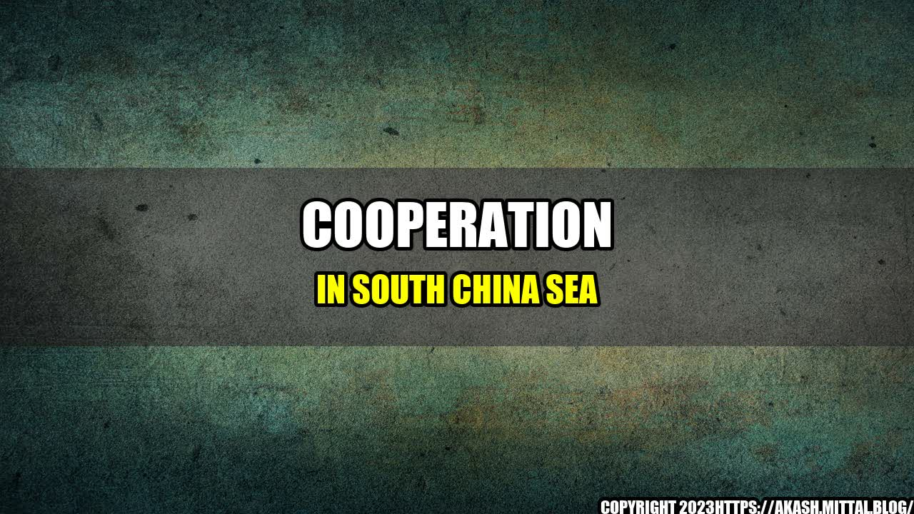

Philippines, Japan, US, and Australia Agree to Step Up Cooperation in South China Sea

The South China Sea has been a source of tension among countries surrounding it, due to territorial disputes and competing claims over fishing grounds, shipping lanes, and potential oil and gas deposits. The situation has been exacerbated by China's increasing military presence in the region, as well as its assertion of sovereignty over most of the South China Sea, which is challenged by several other countries.
Recently, four countries have agreed to step up cooperation in the South China Sea. The Philippines, Japan, the United States, and Australia have signed a joint statement, pledging to uphold international law and the rules-based global order, and to promote peace, stability, and security in the region.
Examples and Case Studies
The joint statement highlights several areas of cooperation among the four countries, including:
Maritime security, including joint exercises and patrols to enhance the capacity of countries in the region to protect their maritime domains and respond to maritime emergencies;
Humanitarian assistance and disaster response, to provide timely and effective response to natural disasters and other emergencies in the region;
Economic development, to promote sustainable economic growth and development in the region, including through infrastructure projects and connectivity initiatives;
Environmental protection, to address the challenges of climate change, ocean pollution, and marine biodiversity loss in the region;
Cybersecurity, to enhance the capacity of countries in the region to prevent and respond to cyber threats, and to promote the safe and secure use of technology;
People-to-people exchanges, to promote understanding, friendship, and cooperation among the peoples of the region, including through education, culture, tourism, and sports.
These areas of cooperation are not new, but the joint statement signifies a renewed commitment by the four countries to work together in a coordinated manner to address the challenges and opportunities in the South China Sea. The joint statement also reflects the shared values and interests of the four countries in promoting a free and open Indo-Pacific, where all countries can enjoy the benefits of economic growth and development, and where disputes are resolved peacefully and in accordance with international law.
Conclusion
The joint statement by the Philippines, Japan, the United States, and Australia is a welcome development in the ongoing effort to address the challenges and opportunities in the South China Sea. By working together in a coordinated manner, the four countries can help promote peace, stability, and security in the region, and uphold the rules-based global order. Furthermore, this joint statement can serve as a model for other countries in the region to follow, as they seek to resolve the territorial disputes and competing claims in the South China Sea.
The joint statement by the Philippines, Japan, the United States, and Australia signifies a renewed commitment by these countries to work together in a coordinated manner to address the challenges and opportunities in the South China Sea.
The joint statement highlights the shared values and interests of the four countries in promoting a free and open Indo-Pacific, where disputes are resolved peacefully and in accordance with international law, and where all countries can enjoy the benefits of economic growth and development.
The joint statement can serve as a model for other countries in the region to follow, as they seek to resolve the territorial disputes and competing claims in the South China Sea.
Curated by Team Akash.Mittal.Blog
Share on Twitter Share on LinkedIn